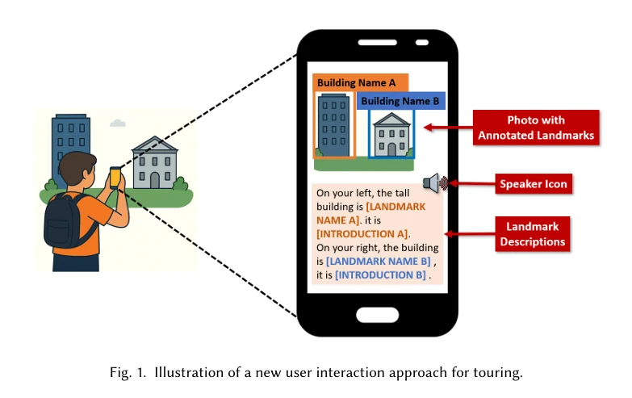

arXiv preprint · 2026
AutoTour: Automatic Photo Tour Guide with Smartphones and LLMs
Automatic photo tour guidance with smartphones and large language models. The project uses everyday mobile capture to provide context-aware tour narration and guidance.
View on arXiv